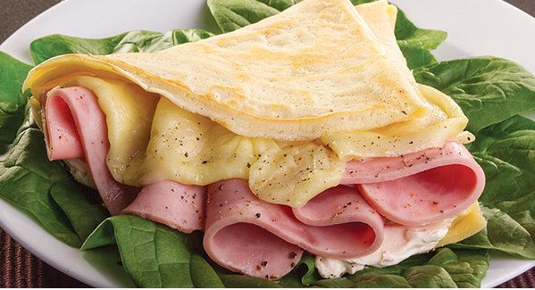

To prepare these crepes you will need two bowls. In one of them, mix milk and flour.
In the other, beat the eggs with butter ointment.
Next, mix the content of both bowls. Let the pasta sit for 15 minutes at room temperature.
Grease a pan using paper impregnated with oil.
Heat it and put some pasta in the pan forming a pancake of approx. 26 cm in diameter.
Cook it on both sides until it acquires a uniform golden tone. Serve crepes filled with about 15 g of Nutella.
CREPE OF SOFT TOFFEE
INGREDIENTS:
½ kilo of wheat flour
1 1/2 cups of milk
1 cup of flour
2 pieces of egg
2 pieces of egg
1/4 teaspoon of salt
2 teaspoons of sugar
1 cup of cajeta or candy of milk
1 cup of milk or the amount needed
1/4 cup chopped walnut (optional)
PREPARATION:
Put all the ingredients (except the cajeta and the walnut) in the blender and liquefy them.
A small round skillet with a few drops of oil is heated (it can be distributed through the pan with a napkin so it does not get greasy).
With a deep spoon, pour a little of the mixture into the pan, ensuring that it covers the whole pan and let it cook for about 45 seconds until it is browned on the bottom.
The same thing is repeated until all the crepes are made. They are accommodated in a greased dish by folding them in four.
In a saucepan put cajeta, a little milk and heat until it is the desired consistency (do not boil).
Put the hot cajeta sauce on the crepes and sprinkle with chopped nuts. They can be put in the oven to heat, or serve immediately.
CREPE OF MARMALADE
INGREDIENTS:
150 gr. Of flour
4 eggs
50 gr. of butter
1 glass of milk
1/2 cucharadita de sal
1/2 teaspoon salt
100 gr. of sugar glas
PREPARATION:
Beat the eggs with the salt.
Heat the butter until it melts.
Pass the flour through a fine sieve and mix it with the yolks, add the milk and mix, without beating.
Cover the container and let stand 2 hours.
Grease a pan with butter and pour a little of the previous preparation.
Move the pan so that the dough extends over the entire surface.
Let it brown on one side and turn it over so that it browns on the other side.
Fill the crepes with the jam.
Fold them twice in half.
Sprinkle with sugar.
CREPE OF MUSHROOM SOUP
INGREDIENTS:
INGREDIENTS OF THE PASTA TO MAKE THE CREPAS
15 grams of butter.
1 Egg.
1 Cup of milk.
100 grams of Flour
1/8 teaspoon of salt
A little oil.
1 tsp. Salt
INGREDIENTS FOR SALSA.
¼ cup of pasteurized milk.
190g or the equivalent of 1 bar of Cream Cheese.
2 poblano chiles roasted and deveined.
2 teaspoons of chicken powder stock
2 tablespoons of corn starch.
Go to taste.
INGREDIENTS FOR CREPAS FILLING
4 cups of washed and sliced mushrooms (cut into thin and elongated strips).
¼ cup of sliced onion.
2 poblano chiles roasted and deveined.
2 tablespoons of parsley.
2 cloves of chopped garlic.
3 tablespoons of oil.
1 teaspoon of chicken powder stock.
6 slices of Manchego cheese.
PREPARATION:
1. Melt butter.
2. Blend the egg, milk, flour, salt and melted butter until all these ingredients are well integrated.
3. Dip a napkin or a little butter with a little oil and pass it through the hot pan over low heat, take this step every time you make a crepe.
4. Empty a large spoonful of pasta, moving the pan circularly to cover the entire bottom, try to form a circle that is not too thick.
5. Cook the crepe for two minutes or until it browns a little, then with the help of a wooden shovel, turn it over to cook again for two minutes.
6. Preheat the oven 10 minutes at 180 ° C.
7. Heat oil in a pan to season the onion and garlic.
8. Then add the mushrooms, parsley and the chicken powder consommé. Cook for 15 minutes.
9. Remove the stuffing from the heat and let it cool a little.
10. Blend all the ingredients of the sauce.
11. Fill the crepes with the mushroom mixture and place them in a rectangular refractory.
12. Bathe the crepes with the sauce and top with the Manchego cheese slices.
13. Bake crepes for 15 minutes at 160 ° C and serve.
CREAM OF HAM AND CHEESE

INGREDIENTS:
150 g of Cream Cheese Philadelphia® Spread
150 g of sliced turkey ham
1 cup. Wheat flour
1 ½ cup. Milk
2 pcs. Egg
2 tbsp. Of melted butter
1 cdita. Of salt
PREPARATION:
Blend the ingredients of the crepe and refrigerate for 30 minutes.
Pour a little mixture of crepes in a hot pan and form the crepe, turn and let cook.
Spread Philadelphia® cream cheese and place a slice of ham.
Roll and cut into slices approximately 2 cm thick.
Place a skewer and serve accompanied by lettuce.
CHICKEN CREPE
INGREDIENTS:
1 cup flour
¼ tablespoon of salt
3 eggs
1 ¼ cups of milk
2 tablespoons butter (melted)
5 tablespoons butter
4 cloves of garlic
1 ¼ cups of milk
2 tablespoons chopped thyme
2 ½ cups of chicken breast in strips
1/3 cup of cream cheese
2 tablespoons chopped parsley
PREPARATION:
Preheat the oven to 175 °.
Crepes: in a bowl, combine flour and salt. In another bowl beat the eggs with milk and melted butter. Beat the mixture together with the flour until they combine well. Cover and refrigerate for 1 hour. Pass the mixture to a clean bowl.
Heat a Teflon pan over medium heat. Spray with oil.
Drain approximately ¼ cup of the dough in the center of the pan, moving it so that the mixture is scattered. Cook for about 1 minute or until the dough turns golden brown. Turn and cook for 30 seconds. Put it on a plate. Repeat with the rest of the dough.
Chicken: in a pan melt 3 tablespoons of butter over medium heat, along with the garlic and thyme. Add the chicken and mix for approximately 5 minutes. Empty the cream cheese until it melts. Remove from heat and add chicken to the center of each crepe and fold it. Arrange the crepes in a refractory. Melt the remaining 2 tablespoons of butter and empty over the crepes.
Put the refractory in the oven for approximately 10 minutes.